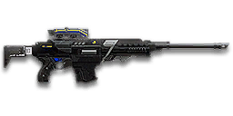

← Back to the Gauss SPR comparison
Sage Guide · New Conglomerate · Infiltrator
325 certs · A 325-cert semi-automatic sniper rifle: two headshots kill at any range, three body shots kill at any range, and the free Ballistics Computer removes scope sway entirely.
The one-line verdict: The forgiving sniper: no bolt to work, no sway to fight, and a 0.15° aimed cone that never grows past a pinprick. It never one-shots — two headshots or three body shots, 0.26 s and 0.52 s respectively — but it also never leaves you defenceless for a second and a half after a miss.

The Gauss SPR · New Conglomerate · 10-round semi-automatic
Picture the scene, because you've probably lived it: you're sprinting across a courtyard, an enemy appears, and you do everything at once — hold the trigger down while you're still running, then press aim-down-sights (ADS) a split-second later, finger still down. The sight picture snaps in, it looks precise… and your bullet sails past his head. He turns, and you are standing in the open with a bolt to work. It feels like the game cheated. It didn't — here's what actually happened.
You started firing from a sprint, from the hip. Sprinting is the least accurate state in the game: your cone of fire starts at 7.0° — fully bloomed, the widest it can ever be. Every shot you fire from the hip widens it further still (+0.15° per shot).
Then you pressed ADS mid-hold — and nothing reset. Aiming down sights does not shrink a cone of fire that is already bloomed. The scope only gives you a precise picture; the bullet keeps flying out of the wide cone you built while running and hipfiring. That's the whole mystery: accurate-looking aim, wildly inaccurate gun. And on a bolt-action, a miss isn't a wasted bullet — it's a None s rechamber while the enemy knows exactly where you are.
Two timers stack the deck further: your gun needs a moment to settle after a sprint, and raising the sight itself takes 0.3 s. Firing through all of it means your one shot — the only one that matters — is pure confetti.
1 · Feet. Let go of sprint (and the trigger, if you're already holding it). Stop, or drop into a strafe — anything but a full sprint.
2 · Sight. Press ADS and let the sight come up. This takes 0.3 s on this gun — a touch longer than the reflex-sight timing in the strip below, because a magnified scope is slower to raise. with a 6× or higher scope, your crosshair also sways — it drifts on its own, and the higher the magnification, the more the drift shows. Hold Shift (hold breath) to steady it, and let go while the bolt cycles so your breath is back for the next shot.
3 · Trigger. Now fire — once. Starting from the aimed cone of 0°, your shot lands where the dot points, and you control the bloom from zero instead of inheriting a maxed-out cone.
Stop → aim → fire. If you take one habit from this entire page, take this one. You'll practise exactly this rhythm in the simulator in section 04.
Four beats, left to right — the same mistake the cards above describe, drawn out.
1 · SprintingYour cone starts maxed at 7.0° — the widest it can ever be.
2 · Trigger heldFiring from the hip while running — every shot adds bloom.
3 · ADS, mid-holdThe sight looks precise — but aiming down sights does not reset bloom.
4 · The sprayBullets fly out of the wide cone you built. The enemy walks away.
Same fight, done right. Each beat has a job, and the order is the whole lesson.
1 · StopLet go of sprint (and the trigger). About 0.3 s for the gun to settle.
2 · AimPress ADS and let the sight come up (~0.3 s).
3 · FireNow fire — from the aimed cone. First shots land where the dot points.
The exception — under ~8 m, skip the whole danceHipfire works, no ADS needed, and stopping is optional. Keep moving, strafe, and let the hipfire ring do the work.
Every enemy infantry has 1,000 health (500 shield + 500 health). Your bullet does 450 damage up close, fading to 334 at long range. Headshots count ×2.0, leg shots count less (×0.9). That gives you three numbers worth memorising:
| Range | Damage | Head | Chest | Legs | Chest vs shielded Heavy |
|---|---|---|---|---|---|
| Close · 0–50 m | 450 | 2 | 3 | 3 | 4 |
| Mid · 50–150 m | 450→334 | 2 | 3 | 3 → 4 | 4 → 5 |
| Far · 150 m+ | 334 | 2 | 3 | 4 | 5 |
Perfect-accuracy times: 2 headshots = 0.26 s, 3 body shots = 0.52 s, at any range — your kill never gets slower with distance, only the bullet drop grows. A headshot kills an Infiltrator (900 HP) within 50 m; beyond that it takes two. The switches in the mid band happen at 118 m (legs) and 125 m (shielded Heavy). Magazine: 10 rounds, with 70 in reserve.
A note on Nanoweave. Sniper rifles use a separate Sniper Rifles resistance type: Nanoweave trims body- and leg-shot damage from sniper rifles, and since the 2026-11-08 Nanoweave rebalance it is the suit slot that matters against snipers. A Nanoweave wearer can need a fourth body shot where this table says three — so if your three-tap leaves a man standing, assume Nanoweave and put the next two in his head. It never touches headshots: two headshots kill a Nanoweave wearer exactly as fast as anyone else.
Full power to 50 m, then a slide to minimum at 150 m. The curve never touches the red line — two body shots never kill — and never drops below the gold line, so three body shots kill at every range.
One gun, four fighting styles. The right technique changes with distance — use the range finder below to see what your bullets do at any range, then learn the four bands underneath it. Your kill never gets slower with range; only the drop grows.
How to fight here—
Aim: centre of the chest, from the hip. Keep moving.
Scoping in costs you time and halves your move speed — at arm's length that gets you killed. Your hipfire cone is wide (6.0° standing), so this is a desperation range for a sniper: two body shots up close still kill, but a carbine or shotgun owner will usually beat you here. Strafe side to side (A/D) while firing, and if you survive the first exchange, reach for your sidearm — it is faster than any rifle at this range.
Aim: head. Two taps, 0.26 s apart.
This is the whole gun: two headshots kill in 0.26 s, and one headshot plus one body shot does the same at any range. Scope in (0.3 s), tap twice, and if he is still standing, tap again — no bolt to work, no 1.5 s of defencelessness. Your bullet takes 0.36 s to reach 200 m and drops 0.50 m on the way, so hold slightly high at the far end of this band.
Aim: head. Two taps, 0.26 s apart.
Damage is sliding toward 334, but the kill never changes: still two headshots or three body shots, still 0.26 s and 0.52 s. What changes is the drop — 1.12 m by 300 m, with a 0.55 s flight time — so hold over the head and lead a walking target by a step. Pause briefly between pairs of taps so the cone resets; your aimed cone is tiny, but it still blooms 0.15° per shot.
Aim: head, held high. Two headshots or three chest shots.
At minimum damage the kill is identical — two headshots, three body shots — but the drop keeps growing and the flight time keeps stretching. Take these shots at stationary or fleeing targets only. Otherwise, close the distance behind cover. Knowing when not to shoot is a skill too — and a missed long shot tells every enemy in 100 m exactly where you are.
Your accuracy is decided by two things before skill even enters it: what your body is doing (your stance sets the starting cone of fire) and what your finger is doing (holding the trigger grows that cone with every shot). The Gauss SPR has no fire-mode switch — semi-automatic only — so "firing modes" are something you do with your finger, not a setting on the gun.
| Stance | Starting cone | What it means for you |
|---|---|---|
| Sprinting | 7.0° | Maxed out — the widest the cone can be. This is the section 01 disaster: never start firing from a sprint. |
| Hipfire, moving | 6.5° | Walking or strafing from the hip. Fine inside ~8 m, leaks rounds past the target beyond it. |
| Hipfire, standing | 6.0° | Your point-blank default. The 0.84 m ring at 8 m in section 05 is this stance drawn out. |
| Hipfire, crouched | 5.5° | The tightest hipfire you have. Crouch when holding a doorway from the hip. |
| Aimed (ADS), feet planted | 0° | Standing or crouched makes no difference here — a perfect point. This is why section 01's order matters. |
| Aimed (ADS), strafing | 0.25° | A quarter of a degree — still a dot at any range you will shoot from. Strafe between shots to stay hard to hit; plant your feet for the shot itself. |
Scope sway. With a 6× or higher scope, your crosshair drifts on its own — the same amount on every rifle and every scope, but higher magnification makes it look bigger. This rifle has the answer built in: the Ballistics Computer rail attachment (free, equipped by default) completely removes sway on all scopes. You will never need to hold your breath on this gun — which is one less thing to think about while you tap.
Scope-in time: raising the sight takes 0.3 s on this gun — the 6× and higher scopes are slower to raise than a reflex sight. Add the brief blackout as the magnified overlay appears, and you are looking at roughly a third of a second from decision to shot: pre-aim the doorway or the ridge line before the enemy appears, don't start scoping after you see him.
| Mode | How your finger does it | Use it at |
|---|---|---|
| Single taps | One click, one shot, let the cone reset | Long range, or a target who is already looking at you — every round goes where the dot is. |
| Two-tap pairs — the default | Two quick clicks, 0.26 s apart, then a short pause | Almost everything. Two headshots kill in 0.26 s; a headshot plus a body shot does the same at any range. |
| Don't hold it down | Holding the trigger fires at 231 RPM until the magazine is empty | Nowhere, except suppressing a doorway. Past three shots the bloom has grown enough that the extra bullets mostly miss — and a 10-round magazine empties fast. |
A target 30 m away, aiming down sights. Press and hold FIRE (mouse, touch, or hold Space with the button focused) and watch the holes walk wider the longer you hold — that's firing from an ever-growing cone. Release, let the cone reset, fire again. Aim for taps of 1–2 shots; 3 is tolerable while you're new. This practice window is shared by the whole Sage series: it's driven by a weapon profile plugged into the window — here the Gauss SPR's (231 RPM, 0° starting cone, 0.15° bloom per shot, target at 30 m) — and the spread is drawn at true scale from those numbers.
Cone of fire — fills as you hold, empties when you release.
Your taps will be graded here — green at 1–2 shots, tolerable at 3.
Some things are easier to show than to say. Here's what your bullets actually do: how wide hipfire spreads at 8 metres, what the shot rhythm looks like, and what the scopes really change. The hands-on version — firing the rifle yourself — is the practice window in section 04.
A full-size target 8 m away — an arm's-length room fight. The rings show where hipfire rounds land around your aim point (the chest). Sizes are drawn to scale from the gun's real cone-of-fire numbers.
Read it this way: standing still, the 0.84 m ring roughly covers the chest — most rounds hit a target this size, which is why hipfire works point-blank. But move and it grows to 0.91 m — wider than the torso — so the edge rounds start leaking past him, and the rings only grow with distance while the man doesn't. Past ~10 m that's rounds missing entirely: the exact moment to switch to aiming down sights, where the spread shrinks to a dot 0.03 m wide even while strafing. (Ring sizes use the real geometry: spread diameter = 2 × distance × tan(cone ÷ 2).)
Every shot widens your aimed cone ("bloom"). A short pause after each pair of taps lets it reset. Same 6 rounds, two very different outcomes:
The target pattern is taps of 1–2 shots — that's the ideal. Three shots in a row is fine while you're new (call it newbie tolerance). Past that, the bloom (0.15° per shot aimed) keeps growing with every shot, so the extra bullets mostly decorate the wall behind your enemy instead of hitting him. Two headshots kill in 0.26 s; three body shots in 0.52 s — you don't need a fourth. The practice window in section 04 grades your taps.
Same target, same 200 m — but he looks four times as tall, so placing a shot on his head gets much easier. The price: your view narrows to the round window and close targets feel fast and huge. Best past 50 m.
Same target, same 200 m — but he looks twice as tall, so placing a shot on his head gets much easier. The price: your view narrows to the round window, the surroundings are gone, and close targets feel fast and huge. Best past 150 m.
That's the whole 30-cert decision from section 06 in one picture: 6× for awareness, 12× for precision. At 12× the target looks twice as tall — and so does the sway, so hold your breath before the shot.
Honest news first: the rifle arrives bare — a 6× scope, no rail, no barrel, standard ammo. Nothing here is free except the scope and the iron sights it replaces, so buy in the order shown and stop whenever the gun feels right. Everything below is an optional sidegrade, not an upgrade.
The 6× scope the rifle arrives with. No sway-free lunch — it sways like every 6× scope — but it is the right magnification for most sniper work.
Good: nearly everything: 100–300 m shots with a wide enough view to track a moving target.
Bad: the very longest shots past 300 m, where the target is small — that's what the 10× and 12× are for.
A small step up in magnification for 30 certs. Same sway, slightly bigger target.
Good: open-field bases where targets sit past 150 m.
Bad: close work — you will never need 7× inside 50 m.
The sweet spot for long-range bolts: the target is a third bigger than at 6×, the view still wide enough to find him.
Good: your 200–300 m game, especially on the Longshot and RailJack.
Bad: aggressive play — the tunnel narrows and the sway looks bigger.
Serious magnification for serious distance. The target fills the scope — and so does the sway.
Good: shots past 300 m from a fixed position, with hold-breath discipline.
Bad: anything under 150 m, or any target who might move — you will lose him out of the window.
The biggest scope in the game. Twelve times magnification turns a man at 300 m into a portrait — and turns your sway into a wobble you have to fight on every shot.
Good: almost nothing a new sniper does — the 8× does the same job with a wider view.
Bad: learning the rifle: the tunnel vision hides the second enemy, and the magnified sway punishes every rushed shot.
The rifle's full damage and full velocity, exactly as the tables in section 02 say. Plenty of veterans run this slot empty forever.
Good: your first weeks, and any fight where you want the longest one-shot headshot range this gun can give.
Bad: nothing — there's no downside to an empty slot.
You vanish from the minimap when firing and your shots are quiet. In exchange, full damage ends 20 m sooner (50 m → 30 m) and bullets fly 15% slower (550 → 468 m/s), so moving targets need more lead.
Good: flanking behind enemy lines, rooftop and tree work, solo play behind the front.
Bad: front-line fighting where everyone already knows where you are — you pay the damage cost for stealth you don't need.
The rifle ships with an empty rail. Plenty of veterans run it empty until they pick a playstyle.
Good: your first weeks. Spend certs on your suit and cloak first.
Bad: nothing — there's no downside to an empty slot.
Completely removes scope sway on all scopes — and it is unlocked and equipped by default. This rifle's signature attachment, and it costs nothing.
Good: every shot you will ever take with this rifle. Leave it on.
Bad: nothing. There is no reason to take it off.
Removes the aimed moving accuracy penalty — your strafing cone becomes your planted cone — but you move 33% slower while aiming.
Good: slow, deliberate long-range work from a fixed position, where you strafe to dodge return fire.
Bad: aggressive play — the slower scoped strafe makes you an easier target, and the penalty it removes is only 0.25° to begin with.
Cuts the time it takes to swap to the weapon by 30%, reduces horizontal recoil by 20%, but increases vertical recoil by 20%. (Since the 2022 Arsenal Update, this replaces the Forward Grip on sniper rifles.)
Good: general play — the faster swap is the real prize when a fight surprises you with your sidearm out.
Bad: nothing major. On a bolt-action the recoil change barely matters — you fire one shot at a time.
A torch whose beam reveals cloaked infiltrators. Toggle it with the attachment key (X by default).
Good: hunting a stalker infiltrator camping your capture point — sweep corners with it.
Bad: as your everyday rail — it gives zero accuracy help, and the beam advertises your position.
This weapon takes no ammo type attachments. There is no soft point or high velocity option for sniper rifles — the damage and velocity in section 02 are the whole story.
Good: nothing to buy, nothing to choose. Spend the certs on optics and rails instead.
Bad: wishing for it — the rifle is complete without it.
325 certs · The gun itself
What 325 certs buys you before a single attachment. Genuinely usable — learn the rifle on this before spending anything.
30 certs in attachments · Recommended
The best value in this whole guide. Two headshots at any range, no sway to fight, and a bigger window on the target for 30 certs.
130 certs in attachments · Ridge holder
Parked on a ridge at 200 m: a bigger scope, a faster swap for when the fight comes to you, and the Ballistics Computer swapped out — you will hold your breath like everyone else now.
100 certs in attachments · Flanker
Built to shoot from rooftops and trees without appearing on the minimap. Full damage ends at 30 m instead of 50 m — stay close to your targets.
Headshots deal ×2.0 damage: two kill in 0.26 s at any range, versus three to the chest in 0.52 s. Don't aim at the head directly — aim at the neck and let the recoil climb carry the second tap into the skull. It's the single biggest damage upgrade you own, and it's free.
The section 01 lesson, every single time: stop sprinting, scope in (0.3 s), then fire. A shot taken from a sprint is a shot wasted — and a wasted pair of taps is a target who now knows where you are.
The Ballistics Computer removes your sway entirely, so there is no breath to manage and no sway to wait out. Spend that attention on the target instead: watch where he is going, not where your crosshair is drifting.
Reloading with even 1 bullet left takes 2.125 s; an empty gun takes 2.975 s — an eternity mid-fight. Count roughly: after one or two kills, duck behind cover and reload early. Treat the last 10 rounds as your emergency reserve, not your working magazine.
Every shot you fire puts you on the enemy minimap out to 100 m. One kill from a ridge is a triumph; two from the same ridge is a death sentence — the second shot tells every enemy in 100 m exactly where to look. Shoot, move, shoot from somewhere new.
Your kill never gets slower with range — two headshots, 0.26 s, anywhere — but the drop does grow, and past 150 m you are fighting the bullet as much as the enemy. Sprint between cover, use buildings and rocks as stepping stones, and arrive at your range before opening fire.
Every gun has a price. Here's where the Gauss SPR pays — and the habit that covers each hole.
Two headshots or three body shots, at any range — there is no distance where a single pull of the trigger ends the fight. A bolt-action kills in one shot to 246 m; you need two.
Play around it: Play around it: make the second tap automatic. Two taps, 0.26 s apart, is still faster than any bolt-action's follow-up.
Ten rounds is three kills if every tap lands — and two if one misses. Empty the magazine on a squad and you are defenceless for 2.125 s — 2.975 s on empty.
Play around it: Play around it: reload early, behind cover, after every kill or two. Never let the magazine hit zero in the open.
0.15° of bloom per aimed shot, and your aimed cone caps at just 0.15° — so after a single shot you are already at the cap. Hold the trigger and the later rounds walk off the target.
Play around it: Play around it: tap in pairs and pause. Two taps, release, let the cone reset, tap again.
Past 150 m you are at minimum damage and the bullet drops 1.12 m by 300 m. The kill is the same — two headshots — but the shot is harder.
Play around it: Play around it: hold over the head and lead moving targets. Or close the distance: your kill never gets slower, so range buys you nothing.
Every shot puts you on the minimap out to 100 m. A sniper who stays in one place is a sniper who gets flanked.
Play around it: Play around it: shoot, move, shoot from somewhere new. The Suppressor (100 certs) removes the dot entirely if you flank often.
Open the world map, travel to VR Training, and run these on the target dummies. Five minutes before a play session beats an hour of dying confused.
At 30–40 m, kill dummies with pairs of taps, releasing the trigger fully between pairs. If a pair goes wide, slow down. Goal: whole kills without a single wild round — two headshots, 0.26 s, every time.
Walk the dummy range keeping your crosshair glued to head height the whole time, snapping to each new target without dipping to the floor or sky. Slow and clean first; speed comes on its own.
Two headshots per dummy, 0.26 s apart — head, head, next dummy. If the second tap misses, the dummy is still standing: that is the whole lesson. Slow the second tap down until it never misses.
Shoot one dummy, then move to a new position before shooting the next — never fire twice from the same spot. This is your survival skill: in real fights, the second shot from the same ridge is the one that gets you killed.
Fire 10 rounds, step behind a pillar, reload, repeat. Train your hands to reload early and only in cover until it's automatic — with a 2.125 s reload, in real fights you'll do it without thinking, which is the point.